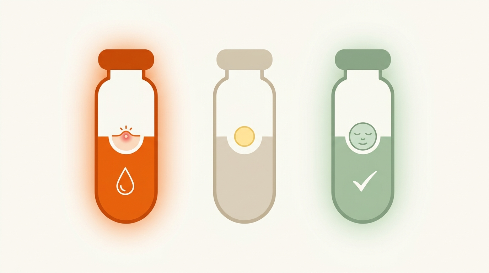
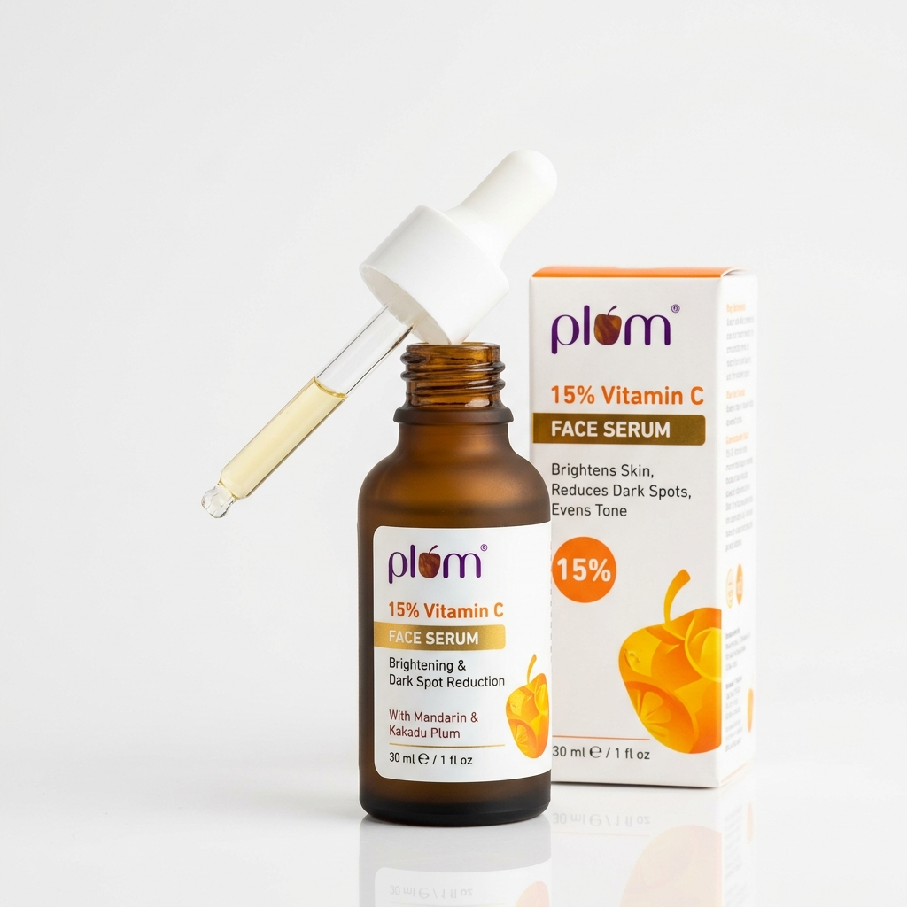
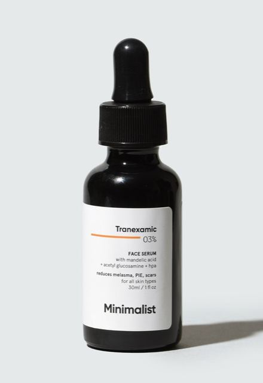
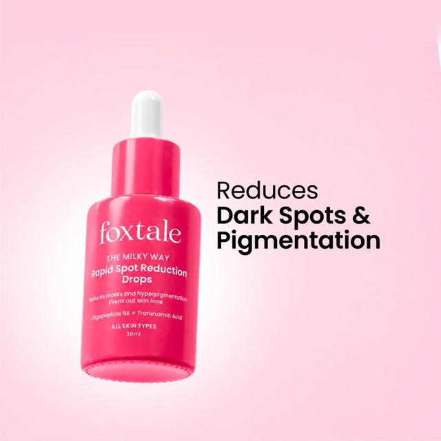

The Purging Myth: Why Vitamin C Cannot Cause a True Acne Purge
When newcomers develop tiny bumps across their cheeks or forehead after starting Vitamin C, online forums often tell them to "push through the purge." This advice is biologically incorrect and frequently leads to barrier damage and long-lasting dark spots [1].
In dermatology, a true acne purge happens only with actives that accelerate epidermal keratinocyte desquamation—such as Adapalene, Tretinoin, or high-percentage Salicylic Acid. These actives speed up cellular turnover, forcing microcomedones that were already forming beneath the surface to emerge simultaneously. Vitamin C has zero effect on keratinocyte shedding rates. Any sudden breakout following Vitamin C application represents contact dermatitis, follicular micro-swelling, or comedogenic occlusion, not a purge.
The Anatomy of Vitamin C Pore Reactions
Look closely at how different formulations interact with your follicular opening:
The 4 Real Reasons Vitamin C Serums Cause Facial Breakouts
If your Vitamin C serum is breaking you out, one of these four clinical mechanisms is responsible:
The Low-pH Acid Shock (pH < 3.5)
For pure L-Ascorbic Acid to penetrate, cosmetic chemists must formulate it below pH 3.5. On skin already stressed by pollution, hard water, or previous acne treatments, this harsh acidity triggers chemical contact erythema and inflammatory papules [2].
Pore-Clogging Glycols & Base Oils
Because ascorbic acid degrades rapidly in water, many commercial serums suspend it in heavy propanediol, propylene glycol, or silicone bases. In warm, humid Indian climates, these dense solvents sit over sebaceous ducts, creating closed comedones.
The Oxidized Serum Trap (Erythrulose)
Exposing pure Vitamin C to sunlight and bathroom humidity converts it into dehydroascorbic acid (DHAA) and Erythrulose—the exact staining chemical found in self-tanners. Applying oxidized serum oxidizes your skin sebum, creating dark brown plugs that mimic blackheads.
The 20% Concentration Ceiling Overload
Consumers often assume 20% is twice as effective as 10%. Dermatological research confirms cutaneous saturation curves plateau completely past 15% to 20%. Moving from 10% to 20% adds zero extra tissue benefits while increasing chemical irritation by over 300%, triggering rebound dark spots on Indian skin [3].
Which Vitamin C Is Actually Safe for Acne-Prone Skin?
Not all Vitamin C serums are created equal. Dermatologists categorize Vitamin C into four distinct chemical families, each with unique stability and acne safety profiles:

Pure L-Ascorbic Acid
- Active Potency: Direct antioxidant active; requires zero molecular conversion.
- Breakout Risk: High; low pH strips lipids and causes follicular swelling.
- Heat Stability: Degrades rapidly in Indian summers; turns yellow within weeks.
- Clinical Verdict: Reserve only for resilient, non-acne skin without active redness.
Sodium Ascorbyl Phosphate
- Active Potency: Converts to ascorbic acid smoothly inside epidermal layers.
- Acne Action: Clinical studies show SAP directly inhibits Cutibacterium acnes bacteria.
- Heat Stability: Outstanding heat and photostability; will not oxidize into orange DHAA.
- Clinical Verdict: The number one dermatologist pick for active pimples and oily skin.
3-O-Ethyl Ascorbic Acid
- Active Potency: Delivers an extraordinary 86% direct molecular conversion rate [4].
- Breakout Risk: Very low; water-light texture without heavy pore-clogging glycols.
- Heat Stability: Stable at room temperature without refrigeration needed.
- Clinical Verdict: Ideal for clearing stubborn post-acne brown marks (PIH).
| Vitamin C Form | Optimal pH | Active Acne Safety | Dark Mark Fading | Stability in Tropical Heat | Verdict |
|---|---|---|---|---|---|
| L-Ascorbic Acid (Pure) | pH 2.8–3.5 | ❌ Irritates open pimples | ✅ Fast on resilient skin | 🔴 Turns orange rapidly | Use With Caution |
| Sodium Ascorbyl Phosphate (SAP) | pH 5.5–6.5 | ✅ Antimicrobial vs C. acnes | ✅ Steady mark clearing | 🟢 High heat tolerance | Best for Active Acne |
| 3-O-Ethyl Ascorbic Acid (EAA) | pH 5.0–5.5 | ✅ Gentle; non-stinging | 🏆 Superior PIH fading | 🟢 Extremely stable | Best for Acne Marks |
| Ascorbyl Glucoside (AA2G) | pH 5.5–6.5 | ✅ Non-comedogenic | 🟡 Mild, slower fading | 🟢 Stable | Good for Sensitive Skin |
Acne-Safe Vitamin C Serums & Buffers Available in India
These four formulations represent evidence-based examples that deliver antioxidant protection without clogging pores or triggering low-pH chemical reactions:

Plum 15% Vitamin C Face Serum with Mandarin
Formulated with 15% Sodium Ascorbyl Phosphate. Unlike pure ascorbic acid, SAP provides direct antibacterial suppression against acne-causing microbes while fading post-blemish discoloration.

Minimalist 10% Vitamin C + Acetyl Glucosamine 1%
Suspended in Centella Asiatica leaf water rather than greasy glycols. Contains 10% Ethyl Ascorbic Acid, giving an 86% active yield to steadily clear dark spots without disrupting sensitive skin barriers.

Foxtale C For Yourself 15% Vitamin C Serum
For those wanting pure L-Ascorbic Acid without burning. It cushions 15% pure Vitamin C with 1% Vitamin E inside a lightweight gel-milk emulsion, preventing rapid acidic evaporation on dry or combination skin.

Sebamed Clear Face Care Gel (Hydration Buffer)
The gold-standard hydration layer to apply over or under Vitamin C. Free of all oils, silicones, and emulsifiers. Formulated with Hyaluronic Acid and Panthenol at pH 5.5 to prevent trans-epidermal moisture loss.
Dermatologist Video Analysis: 5 Biggest Acne & Active Mistakes
Watch board-certified dermatologists explain why stacking aggressive acids, introducing brightening serums over unhealed breakouts, and ignoring barrier health trigger severe skin flares:
How to Tell If Your Vitamin C Serum Has Oxidized & Gone Bad
In tropical Indian heat and humidity, pure L-Ascorbic Acid degrades rapidly. Applying an oxidized serum introduces free radicals that trigger follicular inflammation and blackhead staining:
Your Visual Oxidation Color Scale
Fresh Vitamin C serum is clear or pale champagne straw. As it degrades from heat, oxygen, and UV exposure, it turns yellow, orange, and finally rusty amber. Discard it immediately once it turns deep orange.
Diagnostic Self-Audit: Why Is YOUR Vitamin C Breaking You Out?
Identify Your Exact Breakout Cause
Select the symptom below that matches your skin reaction right now:
Root Cause: Comedogenic Carrier Base or Glycol Solvent
Those closed bumps are caused by the carrier oils or heavy propanediol/propylene glycol in your serum formula trapping sebum inside pores, not by Vitamin C itself. Solution: Discontinue this product for 7 days. Switch to a 100% water-based Sodium Ascorbyl Phosphate (SAP) formula like Plum 15% SAP.
Root Cause: Low-pH Acid Shock (Compromised Lipid Barrier)
Your moisture barrier is chemically inflamed from low formulation pH (under 3.2). Solution: Pause all active serums for 10 to 14 days. Apply only gentle cleanser, Sebamed Clear Face Gel, and ceramide cream. Once healed, reintroduce 10% Ethyl Ascorbic Acid (EAA) at skin-friendly pH 5.5.
Root Cause: Serum Has Oxidized Into Erythrulose (Self-Tanner Staining)
Your serum has degraded into dehydroascorbic acid and Erythrulose, which stains sebum inside follicles and causes free radical oxidation. Solution: Throw the bottle away today. In the future, keep pure ascorbic acid in the refrigerator, or buy heat-stable derivatives (SAP or EAA) that do not oxidize.
How to Introduce Vitamin C Safely: The Dermatologist AM Protocol
Follow this exact sequence to fade acne marks without damaging your skin barrier:
If you currently have open, painful pimples or cystic pustules, pause Vitamin C. Clear active bacteria first with Salicylic Acid face wash or night-time Adapalene. Vitamin C is a brightening active, not an acute acne medicine.
Apply 1 drop along your jawline behind the ear for 3 consecutive evenings. If redness, bumps, or itching develop, the formulation is incompatible with your skin—switch to SAP instead.
Wait 3 to 5 minutes after washing your face before applying your serum. Damp skin dramatically increases trans-epidermal acid penetration, turning a gentle formula into a harsh chemical burn.
Use 3 drops only on Tuesday, Thursday, and Saturday mornings. Increase to daily application only after your skin has shown zero redness or stinging for 3 full weeks.
Always seal your morning routine with non-comedogenic SPF 50 sunscreen. Vitamin C neutralizes free radicals, while sunscreen blocks UV rays that reactivate melanocytes and darken post-acne marks.
Frequently Asked Questions: Vitamin C & Breakouts
No. Vitamin C is an antioxidant and does not accelerate cellular turnover like Retinoids or Salicylic Acid do. Sudden bumps or redness after using Vitamin C indicate a reaction to low pH acidity, comedogenic carrier oils, or an oxidized serum—not an acne purge.
Sodium Ascorbyl Phosphate (SAP) at 10% to 15% is the top dermatologist recommendation. It operates at skin-neutral pH 6.0, remains completely stable in hot Indian weather, and clinical studies show it directly suppresses C. acnes bacteria. For stubborn brown acne marks, 10% Ethyl Ascorbic Acid (EAA) is also excellent.
When pure L-Ascorbic Acid degrades in heat and air, it converts into dehydroascorbic acid and Erythrulose—the same coloring agent in self-tanning sprays. When this degraded serum enters open pores, it binds with natural sebum and stains them orange-brown. Discard the serum immediately.
Yes. Pairing Niacinamide with modern Vitamin C derivatives like SAP or Ethyl Ascorbic Acid is completely safe and highly effective for regulating sebum and fading dark marks. The old myth about facial flushing only applied when unbuffered pure ascorbic acid was mixed with pure niacinamide powder at high temperatures.
Store pure L-Ascorbic Acid serums in the refrigerator (4°C to 8°C) in an opaque glass dropper bottle. Avoid keeping serums in the bathroom where steam and temperature fluctuations accelerate oxidation. If you use SAP or EAA derivatives, they are heat-stable and can stay in a cool, shaded drawer.
On Indian skin (Fitzpatrick III–VI), epidermal melanin turns over every 28 to 45 days. Consistent morning application of 10% EAA or SAP alongside SPF 50 sunscreen yields visible lightening of post-acne marks (PIH) within 6 to 8 weeks, with optimal clearance at 12 weeks [5].
Medical Review & Scientific References
Peer-Reviewed Medical Citations
- [1] Klock J, Göttlicher B, Borwitzky H, et al. Sodium ascorbyl phosphate shows in vitro and in vivo efficacy in the prevention and treatment of acne vulgaris. Int J Cosmet Sci, 2005;27(3):171-176. PubMed PMID: 18492184
- [2] Pinnell SR, Yang H, Omar M, et al. Topical L-Ascorbic Acid: Percutaneous Absorption Studies. Dermatol Surg, 2001;27(2):137-142. PubMed PMID: 11207686
- [3] Woolery-Lloyd H, Friedman N. Postinflammatory Hyperpigmentation in Fitzpatrick Skin Types III-VI: Treatment Protocol. J Clin Aesthet Dermatol, 2011;4(10):28-34. PMCID: PMC3199460
- [4] Stamford NP. Stability, transdermal penetration, and cutaneous effects of ascorbic acid and its derivatives. J Cosmet Dermatol, 2012;11(4):310-317. PubMed PMID: 23205549
- [5] Telang PS. Vitamin C in dermatology. Indian Dermatol Online J, 2013;4(2):143-146. PMCID: PMC3673383